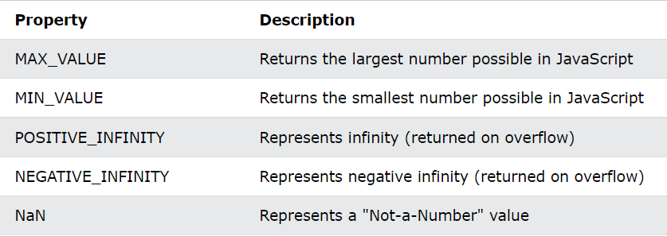

1. Exponent(e)
Its means zero shorter and + - is also use : Examples: 15000 is equal to 15e2
Return value :
2. Precision
1. 15 Digit of numbers will be return 15 digits
2. 16 digit of numbers will be return 17 digits
3. Not a Numbers
Return will be Nan (Not a number)
3. is
Is is also -typeof- method But Boolean result given
Return value :
4. NaN String
Nan String Will be print in return value
5. Infinity String
Its very complicated to undertstand to visit this site Pythontutor
Return value :
6. Hexadecimal
Go to Details it Hexadecimal
7. Numbers to Objects
Must see JS File to Understand
1. Number To String and valueOf
Return Value :
2. Methods
Return Value :
3. The Number() Method Used on Dates
Return value :
More Info4. Number Property
